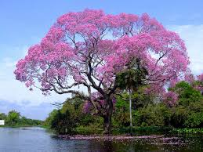

O Ipê Rosa (Tabebuia impetiginosa) é uma árvore tropical da América do Sul, conhecida por sua deslumbrante floração. Com altura que varia de 10 a 20 metros, o Ipê Rosa tem folhas compostas por cinco folíolos que se tornam amarelas antes de cair. Suas flores, grandes e em forma de trombeta, são de uma vibrante cor rosa e aparecem no final do inverno e início da primavera, criando um espetáculo visual impressionante. A árvore prefere climas tropicais e subtropicais e solos bem drenados, sendo frequentemente plantada em parques e jardins. Além de sua beleza ornamental, a madeira do Ipê Rosa é valorizada por sua resistência e é utilizada em marcenaria e construção. A floração do Ipê Rosa também simboliza a chegada da estação das chuvas em algumas culturas.Descrição da planta 2
Fauna do Pantanal
Descrição do animal 1Descrição do animal 2
Sobre o Pantanal
O Pantanal é uma das maiores planícies alagadas do mundo e é conhecido por sua biodiversidade impressionante, tanto em flora quanto em fauna. É um ecossistema único e crucial para a conservação de muitas espécies.